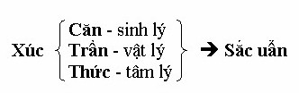
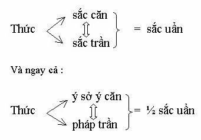
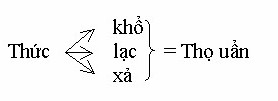
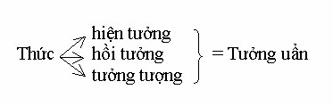
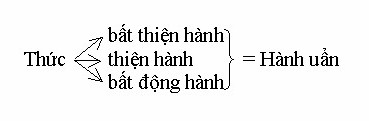
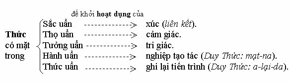
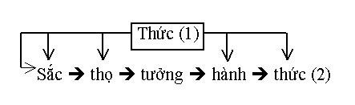
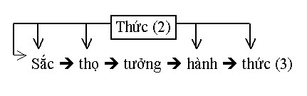

|
Thực Tại Hiện Tiền Viên Minh |
|
BuddhaSasana Home Page |
Vietnamese, with Unicode Times font |
|
|
Thực Tại Hiện Tiền Viên Minh |
|
[05] NGŨ UẨN N ếu không ai hỏi gì nữa chúng ta bắt đầu nói đến ngũ uẩn. Ngũ uẩn là gì? Ngũ uẩn chính là tiến trình phức tạp chồng chất của xúc, thọ, tưởng, tư. Nó cũng qua một sự vận hành tương tự như những vận hành mà chúng ta đã bàn ở trên.
Xúc (= căn + trần + thức) chính là sắc trong ngũ uẩn xin lưu ý cho điều đó. Thường thường người ta hiểu sắc là nội sắc: mắt, tai, mũi, lưỡi, thân và ngoại sắc; sắc, thinh, hương, vị, xúc. Có người còn tệ hơn nữa, hiểu sắc là đối tượng của mắt. Nhưng chữ sắc dùng trong ngũ uẩn không phải là các loại sắc trên. Sắc trong ngũ uẩn là một sự tập khởi do sự vận hành tương tác giữa căn, trần, thức mà có, chứ không phải một dữ kiện hoặc một thực thể có sẵn. Sắc này không mang tính vật chất cố định mà mang tính duyên khởi của một nhóm tâm-sinh-vật-lý.  Khi có động dụng tương giao tương tác (xúc) giữa 3 yếu tố trên thì sắc uẩn tập khởi, nếu không động dụng thì sắc uẩn không tập khởi, chứ không phải sắc uẩn luôn luôn có mặt. Như vậy trong sắc uẩn vẫn có sắc căn và sắc trần nhưng đó là điều kiện cần chứ không đủ để hình thành sắc uẩn. Ví dụ có mắt, có sắc nhưng nếu không có tác động hỗ tương thì không khởi sắc uẩn. Đây là điều cực kỳ quan trọng. Cho nên, xin quý vị ghi nhớ cho điều này. Mọi người ngồi đây, có căn, có trần mà sắc uẩn có thể không khởi lên. Xưa nay người ta hay nghĩ rằng (các Chú giải cũng vậy) sắc uẩn là cái thân xác thịt mình đây. Không phải vậy, không phải mình sinh ra là đã có cái ngũ uẩn cố định sẵn trong này. Chỉ khi nào nó tác động lên, hiện hành cái tiến trình này: sắc uẩn, thọ uẩn, tưởng uẩn, hành uẩn, thức uẩn - thì ngũ uẩn mới có mặt. Chữ sắc này - sắc uẩn - mà Suzuki trong thiền luận dịch là form thì không đúng. Ngay cả cái sắc là đối tượng của mắt mà dịch là form cũng đã không đúng rồi. Vì sao vậy? Vì form chỉ nói lên được mặt hình tướng chứ chưa nói đến màu sắc, ánh sáng, chất liệu v.v... Vậy không thể dịch form được. "Sắc uẩn" không thể nào dịch ra tiếng Anh được. Cứ để nó là Rūpa-khandha vậy thôi. Cả căn, trần, thức hợp lại với nhau thì mới gọi là sắc uẩn. Đặc biệt trong sắc uẩn hàm chỉ luôn cả cái xúc của ý và pháp. Cũng đừng nói "thân ngũ uẩn" trừ phi ám chỉ bản ngã. Nói thân này gồm có tứ đại hay thân tứ đại là đúng hơn vì trong sắc uẩn này, tứ đại chỉ là một phần thôi. Tứ đại tạo nên một số căn. Tứ đại tạo nên một số trần. Nhưng đến thức là hết tứ đại rồi phải không? Vậy mà thức có dự phần vào sắc uẩn. Sắc uẩn là một diễn biến, một động dụng sinh khởi do tác duyên của căn - trần - thức xin nhắc lại như vậy. Bây giờ, mình có thể phá sắc uẩn được không? Khi mắt thấy sắc, tai nghe âm thanh, v.v... mình trả mắt, tai về cho căn, sắc, thanh về cho trần, và nhãn thức, nhĩ thức về cho thức, không cho dính líu gì với nhau. Trả không phải mắt đừng nhìn sắc, tai đừng nghe âm thanh... mà trả bằng tuệ quán Vipassanā Ñāna, để tham ưu không xen vào can thiệp. Khi ấy, sắc uẩn sẽ không thể phát sanh, nghĩa là mình phá được sắc uẩn. Có đúng không? Có được không? Có ai phản bác chuyện này không? Nó rất vi tế. Vì sao mà mình phải phân tích cho kỹ, nói cho rõ ràng như vậy? Nếu không thấy cái sắc uẩn ấy thì mình không thể phá nó được. Mình tu mà mình cứ diệt sắc căn trần, nghĩa là trừ bỏ căn thân và trần cảnh này cho mau giải thoát, vậy là sai lầm rồi. Mình có hóa giải thì hóa giải sắc uẩn thôi chứ, phải không? Phải biết rõ rằng sắc uẩn chỉ là sự tương duyên tương tác của căn, trần và thức, nghĩa là tác dụng, tác động của cả 18 giới (6 căn, 6 trần, 6 thức) thì sắc uẩn mới không được chứ. Bây giờ đến thọ uẩn. Thọ thì quý vị biết rồi. Do sự tác dụng của sắc uẩn nên mới có khởi lên tác dụng của thọ uẩn. Thọ uẩn cũng vậy, là sự tập khởi của các thọ một cách phức tạp, chồng chéo, rối ren. Do duyên xúc của sắc uẩn mà có thọ uẩn. Vì vậy mình có thể chấm dứt thọ uẩn được. Ví dụ như khi mình có khổ thọ, lạc thọ hoặc xả thọ, nhưng tâm mình hoàn toàn không thủ không xả, hay "nhất niệm bất sanh" thì lúc đó khổ, lạc, xả có cũng như không. Vì tuy có thọ nhưng hoàn toàn không có chồng chéo rối ren, không thành thọ uẩn. Như vậy, trên thế giới khách quan, thọ chỉ do duyên khởi mà thôi nên ta có thể phá nó bằng cách không cho nó biến thành uẩn. Tưởng uẩn cũng vậy. Có khi ta nhìn một vật, nghe một âm thanh nhưng ta không thấy không nghe gì cả. Có khi nào quý vị thấy như vậy không? Nhất là khi ta hoàn toàn sáng suốt, tỉnh thức trong ánh sáng của tuệ quán (Vipassanā ñāna) thì tưởng tuy có mà mất tác dụng biến thành uẩn. Như vậy ta có thể phá được tưởng uẩn. Còn hành uẩn chính là do tư chủ động điều hành, tập hợp các tâm sở khác để tạo tác. Lại do sự tập hợp của sắc, thọ, tưởng làm duyên trước, nên hành chính là "tập hợp tạo tác" cũng gọi là hữu vi. Hữu vi là Sankhāra. Từ động từ Sankharoti (sam + kr) có nghĩa là tập hợp lại, sửa soạn, tạo tác (sam: hợp chung lại). Vậy sankhāra là tác dụng điều hợp tạo tác (nghiệp). Nhưng khi tư nhường quyền điều hợp cho trí tuệ (paññā) thì hành uẩn bị hóa giải, nghĩa là hành không còn tạo thành uẩn, lúc đó sankhāra biến thành Asankhāra. Tức là vô vi. Thức uẩn đóng một vai trò đa năng:
Đồng sở duy ên (Tadālambana) có tác dụng như A-Lại-Da Thức của Duy Thức Luận, nó ghi lại toàn bộ tiến trình 4 uẩn trước, nhất là hành uẩn. Tốc hành tâm là sự tạo tác nhặm lẹ.Có thức tác động lên căn, trần thì sắc uẩn mới thành hoạt dụng. Người chết mắt không thể thấy sắc.  Vì vậy sắc uẩn không phải chỉ là sinh lý (căn) hay vật lý (trần) mà còn có sự cộng tác của tâm lý (thức) nữa. Nhưng thức ở giai đoạn này chưa phải là nhận thức. Có thức tác động lên thọ mới làm công tác cảm thọ được vì vậy:  Thức ở đây chỉ đóng vai trò tiếp thụ cảm giác. Nhưng nếu không có thức không thể có thọ, vì một xác chết không thể nào có khổ, lạc được, phải không? Có thức tác động lên tưởng thì mới có thể hình thành tưởng uẩn.  Thức trong tưởng chỉ đóng vai trò tiếp thọ (hình tướng) suy đạc, xác định, nếu không có 3 yếu tố này thì tưởng không thể nhận biết được, giống như người hôn mê không biết gì cả. Có thức tác động lên hành thì tư mới điều hợp đủ tâm sở để làm công tác tốc hành tâm (javana). Thức ở đây đóng vai trò như Mạt-na trong Duy Thức.  Cuối cùng thức đóng vai trò đồng sở duyên để ghi lại toàn bộ tiến trình ngũ uẩn. Thức này chính là A-Lại-Da thức trong Duy Thức. Tóm lại:  Muốn thấy được tiến trình này chúng ta phải quan sát sự thực diễn ra trong tâm. Khi tôi đang nói, không phải quý vị chỉ nghe bằng tai để ghi nhận mà thực sự phải coi lại tâm mình, kiểm tra lại tâm mình. Vì trình bày nên phải dùng tới ngôn ngữ, nhất là các thuật ngữ kinh điển làm cho chúng ta mệt. Vậy xin lập lại, chúng ta phải thấy cái thực ấy ở nơi đương xứ của tiến trình tâm - sinh - vật lý ấy. Cái thực ấy mới là quan trọng, còn các thuật ngữ thì nói "huyên thuyên chi địa" rứa thôi. Nghe xong, thấy cái thực xong thì bỏ! Chớ đừng ôm đồm nào là tiếng Anh, tiếng Phạn, chữ Hán... vô ích. Mình phải hóa giải nó, vô hiệu hóa nó để mà thấy cái thực. Trở lại vấn đề, trong sắc, thọ, tưởng, hành, thức, thì hành chính là do tư (trong xúc, thọ, tưởng, tư và cũng chính là phi hữu ái, hữu ái và dục ái). Hành được điều động bởi tư nên nội dung của hành tùy thuộc vào tư. Hành là cái khâu quan trọng nhất. Chính nó là thủ phạm gây ra thiện ác đủ thứ. Nếu ta giải quyết được hành là giải quyết được toàn bộ, phá được toàn bộ. Có câu kệ phá ngũ uẩn như sau:
Dục sanh nơi ý chính là hành (dục ái, hữu ái, phi hữu ái). Ý do tư tưởng sanh tức là tưởng. Không tâm tức là trí tuệ soi chiếu không để thức tàng trữ chủng tử. Các tịch tịnh tức là chánh định làm cho các thọ yên ổn. Phi sắc tức không để cho sắc uẩn hình thành. Diệc phi hành tức phá được vô minh, ái dục. Như vậy là toàn bộ ngũ uẩn bị phá đổ: "ngũ uẩn giai không". Điều này chúng ta sẽ nói sau. Ngũ uẩn chỉ là sự tập khởi của một tiến trình tâm-sinh-vật lý. Trừ phi tiến trình được soi sáng bởi trí tuệ đến bờ kia (paññā paramitā), ngũ uẩn thường bị vô minh chi phối tà kiến phát sinh, từ đó ngũ uẩn trở nên phức tạp chồng chất, rối ren và cuối cùng bị chấp lầm là bản ngã. Vậy bản ngã không có thực, nó chỉ là ngũ uẩn, và trong ngũ uẩn chỉ có hành là tạo tác. Phá bản ngã thì phải thấy toàn bộ sự vận hành của ngũ uẩn, nhất là hành uẩn. Phá bản ngã thì ngũ uẩn hết tạo tác, chồng chất và rối ren, để trả nó về tình trạng nguyên sơ xúc-thọ-tưởng-tư-tác ý.
Nếu tác ý là như lý (yoniso) và tư được hướng dẫn bởi trí tuệ rốt ráo thì bản ngã cùng với ngũ uẩn đều không. Vậy ngũ uẩn có thể sinh khởi, có thể không. Ngũ uẩn có thể sinh khởi ở người này khác, người kia khác. Ngũ uẩn có thể thiện có thể ác v.v...
Tâm đây chính là thức có mặt trong 5 uẩn, nó chi phối 5 uẩn. Trong thế giới bản ngã này không có pháp nào nó không tạo. Kinh pháp cú có dạy: "Trong các pháp, tâm dẫn đầu, tâm là chủ, tâm tạo tác tất cả" cho nên:  Thức (1) dẫn đầu, làm chủ, tạo tác các pháp sắc, thọ, tưởng, hành, thức (2). Thức (2) ghi lại sự tạo tác trên, như bộ nhớ của máy điện toán nhưng nó phức tạp hơn, để rồi mang nội dung đã ghi nhận đó tạo tác ra ngũ uẩn kế tiếp sắc, thọ, tưởng, hành, thức (3) .  Thức (3) lại ghi nhận, lại khởi lên v.v... và cứ thế ngũ uẩn chồng chất, rối ren thành (4), (5), (6), .v.v... Những ví dụ hôm trước, chuyện cái anh chàng ngày hôm qua nó đánh mình gãy răng, cho nên vừa thấy nó đập trên vai mình một cái là mình đùng đùng nổi giận. Vậy là sao? Là vì thức khởi sinh đã chấp giữ kinh nghiệm của thức quá khứ (hôm qua) cho nên thức hiện tại không còn khách quan, trung thực được nữa. Cái đó gọi là do phi như lý tác ý (ayoniso mannasikāra). Cái sắc, thọ, tưởng, hành, thức ngày hôm qua chồng chất lên sắc, thọ, tưởng, hành, thức hiện tại nên tác ý của nó sai lạc. Nếu trái lại cũng anh chàng ấy xuất hiện mà tâm mình trong sáng, không mảy may chấp giữ kinh nghiệm của ngày trước - mình nhìn nó như nó bây giờ vậy thôi - tức là như lý tác ý (yoniso manasikāra). Đó là thấy đúng, cái thấy thực. Và không có vấn đề gì cả, phải không? Cái mà chồng chất cảm giác, tri giác, chồng chất kinh nghiệm quá khứ lên thực tại, gọi là uẩn. Uẩn tức chồng chất rối rắm lớp này đến lớp khác. Cái mà chúng ta đã gọi là tri kiến lập tri, Thiền Tông gọi là "đầu thượng trước đầu" (trên đầu chồng lên một cái đầu), "tuyết thượng gia sương" (thêm sương trên tuyết). Vậy tiến trình của ngũ uẩn chính là tiến trình ghi lại kinh nghiệm, chúng ta cần nhận rõ điều đó. Kinh nghiệm của ngũ uẩn quá khứ chồng lên ngũ uẩn hiện tại để tạo ra kinh nghiệm mới. Thật ra gọi là mới, nhưng không còn mới nữa, trong đó đã tiềm tàng kinh nghiệm cũ, có phải vậy không? Uẩn là vậy, uẩn là chồng chất, rối ren, phức tạp. Giả dụ, với anh chàng kia, mình gây nhau, đánh nhau thêm một trận nữa, rồi ngày mốt gặp lại, thức lại chồng thêm một lớp nữa, đó là chưa kể tối về nằm ngủ, ý thức làm việc, là đã tự chồng lên không biết bao nhiêu lớp nữa rồi. Mình nhớ lại cái chuyện đánh nhau, nghĩ tức giận thế này, thế nọ, mình tạo tác thêm nữa. Tức là, trường hợp trước, ngũ uẩn có qua tai, mắt, mũi, lưỡi, và thân. Trường hợp sau đêm về nhớ lại, thì ngũ uẩn qua ý, pháp và ý thức. Vậy thì ngày hôm sau, không chỉ ghi lại kinh nghiệm của ngày hôm trước, mà còn chồng chất cái hậm hực, tức giận của đêm đó hồi tưởng lại nữa. Dễ sợ chưa? Rõ ràng là cả một đống, phải không? Một đống rối rắm không thể gỡ nổi, nên chỉ mới thấy mặt hắn là muốn đánh nhau rồi, có phải thế không? Đấy mới chỉ chồng chất một chuyện đánh nhau. Còn tất cả những thứ khác thì sao? Chồng chất những cái gì? Chồng chất tỵ hiềm, ganh ghét, yêu thương, sợ hãi, hận thù, ngon ngọt, cay đắng v.v... và v.v... Cho nên, ngũ uẩn tuy có thể giai không một cách dễ dàng, thế mà, quý vị biết không, ở đây trong mỗi chúng ta, ngũ uẩn đã trở thành Tu-Di-Sơn rồi đó. Khiếp chưa? Phá không nổi nữa. Có thiết bảng của Tôn Ngộ Không may ra, chớ phá không nổi nữa rồi, phải không? Có người hỏi: - Có anh đó rất say mê âm nhạc, anh mới mượn được một băng nhạc rất hay, về mở nghe. Mới nghe được một lát, anh ta sực nhớ có một công việc cần làm ngay, và anh đi làm. Trong thời gian làm, anh vẫn nghe nhạc. Nhưng lát sau, công việc cuốn hút anh ta, anh ta chú tâm vào công việc nên không nghe tiếng nhạc nữa. Như vậy, rõ ràng âm thanh vẫn đến tai anh ta, nhưng anh ta không ghi nhận được. Hoặc ví dụ con đang ngồi nghe giảng đây, ban đầu con nghe tiếng tích tắc của đồng hồ, lát sau chẳng nghe tiếng tích tắc của đồng hồ nữa. Như vậy, lúc đó bảo thức không có là không đúng, vì vẫn còn làm việc. Còn bảo thức có, thì sao lại không nghe được? - Đúng. Đúng! Câu hỏi rất hay! Bởi vậy cho nên nhất tâm và mạng căn lúc ấy mới thấy là quan trọng. Không có hai tâm sở nhất tâm và mạng căn thì cái tâm đó nó sẽ loạn lên hết chẳng còn chú tâm được nữa. Quý vị nhớ cho thế này, cái tâm nó rất vi tế. Một tiến trình tâm kéo dài nhất là 17 sát-na thôi. Thời gian 17 sát-na là chừng nào? Xin thưa, 17 sát-na không phải chưa tới một giây, mà chưa tới 1/1.000 giây! Nó rất nhanh. Do đó, từ tiến trình sắc, thọ, tưởng, hành, thức này nó chuyển qua sắc, thọ, tưởng, hành, thức khác rất nhanh.
"Chủng chủng" là các loại, rất nhiều loại. Có rất nhiều loại ngũ uẩn khác nhau. Ví dụ mắt, sắc, thức tạo ra một tiến trình ngũ uẩn khác. Các căn và trần khác cũng vậy. Một người đang coi ti vi, con mắt mình và đối tượng của nó tạo ra một tiến trình ngũ uẩn. Đồng thời tai mình nghe nhạc đệm, vậy tai và đối tượng của nó tạo ra một tiến trình ngũ uẩn khác nữa. Chúng ta có thấy gì ở trường hợp đó không? Chúng ta vừa thấy hình vừa nghe âm nhạc đệm một cách rõ ràng, không có lẫn lộn nhau. Vì sao vậy? Vì tiến trình nào cũng nhất tâm cái đó. Tiến trình ngũ uẩn từ tai và âm thanh đồng nhất mà tiến trình ngũ uẩn từ mắt và sắc vẫn đồng nhất. Cái đó rất vi tế. Kim Dung có một nhân vật tên Châu Bá Thông, ông có sáng chế một môn võ là "Song thủ hỗ bác", nghĩa là hai tay cùng đánh với nhau. Tay phải ra một thế võ thì tay trái đánh một thế võ để đấu lại. Vậy là sao? Ông ta đã "phân tâm nhị dụng", tay phải đánh một kiếm thế này, đồng thời sử dụng tay trái đánh một kiếm thế khác. Ông ta đã sử dụng hai tiến trình "một lần" mà vẫn nhất tâm ! Người đánh đàn, người đánh máy, và rất nhiều công việc đòi hỏi phải sử dụng nhiều tiến trình tâm-sinh-lý "một lần". Đại khái, chúng ta phải biết l à, có thể 2, 3 tiến trình tâm cùng xuất hiện một lần, nhưng trên thực tế là xen kẽ nhau một cách trật tự trong cùng một khoảng thời gian chứ không phải trùng phùng, nghĩa là hoán vị chứ không phải đồng vị. Nhưng 17 sát-na quá nhanh đến nổi ta tưởng cùng một lần. Trong một giây biết có bao nhiêu là tiến trình tâm sinh khởi. Ví dụ khi ta thấy một người phụ nữ mà tưởng rằng là em gái của mình. Ở đây, mắt thấy người phụ nữ là một tiến trình ngũ uẩn, nhưng tưởng người em gái thì ý thức lại tạo ra một tiến trình ngũ uẩn khác. Vừa thấy phụ nữ vừa tưởng người em gái tức là vừa có tiến trình qua nhãn thức vừa có tiến trình qua ý thức. Có phải không?Nhưng trong khi 2, 3 tiến trình ngũ uẩn xảy ra "cùng lúc" mà ta chú ý vào một đối tượng nào nhiều hơn thì tiến trình đó sẽ mạnh hơn, và các tiến trình kia sẽ biến mất. Một tiến trình dài nhất là 17 sát-na, nhưng nếu mạnh nó lập đi lập lại rất nhiều lần trên một đối tượng, và do đó các tiến trình kia không xen vào được. Đó là lý do tại sao anh làm việc, anh không còn nghe tiếng nhạc nữa. Có người hỏi: - Trong quá trình sắc, thọ, tưởng, hành, thức thì sắc không phải là một cái gì cụ thể, mà nó là kết quả của một tập hợp căn-trần-thức như Sư đã giảng. Khi đã nhận thức được như vậy, giả dụ bây giờ con nghĩ ra một cách để phá ngũ uẩn, xin trình sư xem thử thế nào, có hợp lý không? - Vâng! - Sắc tập hợp lại giữa 3 yếu tố căn-trần-thức, thiếu 1 trong 3 yếu tố thì tập hợp ấy không hoạt động được, không hiện hành được. Như vậy thì bây giờ hành giả chỉ cần làm thế nào phá đi 1 trong 3 yếu tố đó thôi, hoặc là căn, hoặc là trần, hoặc là thức. Chẳng hạn như thế này: nếu mắt mình không nhìn sắc, mũi không ngửi mùi hương, hoặc lưỡi không nếm vị ngọt, thân mình không tiếp xúc với những cảm giác cứng hoặc mềm, ý mình không nghĩ đến một điều gì đó v.v... Trong trường hợp này, lục thức không phát khởi được, vì nó thiếu yếu tố trần cảnh. Như vậy có nghĩa là không có sắc uẩn, vì nó không hội đủ yếu tố để tạo sắc uẩn. Trong trường hợp một người đang ngủ hoặc ngất xỉu chẳng hạn, họ có phá được ngũ uẩn hay không? Thứ hai nữa, trong trường hợp mình tập trung ý mình lại, ví dụ tập trung ý mình vào danh hiệu Phật thôi, thì mình có tạo được ngũ uẩn tốt hay không? Vì khi ý của mình niệm danh hiệu Phật Thích Ca chẳng hạn, nó sẽ tạo cho mình một cái thức, mà nội dung cái thức đó là toàn thiện ý. Như vậy có phải mình sẽ có ngũ uẩn mang tính chất thiện hay không? - Khoan cái đã, bây giờ thế này, chúng ta có thể giải quyết từng khâu một. Dù chúng ta niệm Phật, lúc đó cũng có ngũ uẩn phát sinh. Vì khi khởi tâm niệm tức là đã có ngũ uẩn. Nhưng trong trường hợp đó mình sử dụng hành uẩn một cách tốt đẹp. Giả dụ mình niệm đến nhất tâm bất loạn, cận hành (sắp định) hoặc an chỉ (định). Tuy vậy mình vẫn tạo tác, nhưng tiến trình ngũ uẩn ấy là tiến trình tốt. Anh nói đúng, hành uẩn có thể thiện hoặc bất động kia mà. Điều thứ hai, trong lúc m ình ngủ, có thể tiến trình ngũ uẩn ở cái dạng không khởi tác dụng chứ không phải là phá. Phá là khi nào mình dùng trí tuệ soi chiếu ngay trong tự thân của nó mà mình chiếu phá được nó, mới gọi là phá. Không phải khi nó tĩnh lặng gọi là phá. Khi nó không khởi không gọi là phá. Khi một tiến trình tâm không khởi thì nó lại về trạng thái bhavanga (hôm khác chúng ta sẽ nói đến tiến trình tâm chi tiết hơn để thấy rõ bhavanga này). Trong bhavanga, ngũ uẩn không hiện hành mà nó lại tiềm ẩn dưới dạng vô thức. Tức là ngũ uẩn cũng ngủ! Như vậy đâu phải phá được ngũ uẩn.Mình có thể phá được ngũ uẩn hiện hành bằng trí tuệ soi chiếu, nhưng mầm mống của nó trong vô thức vẫn chưa phá được, vì thức uẩn đã tàng trữ mầm mống trông đó rồi. Phá ngũ uẩn bằng cách không nghe âm thanh, không ngửi mùi hương v.v... thì có thể là tiến trình ngũ uẩn không khởi lên. Nhưng phá là phá ngay khi nó khởi lên bằng tuệ quán (Vipassanā ñāna) chứ không phải không cho nó khởi lên. Phải phá ngũ uẩn hữu thức trước, để thức uẩn không còn tàng trữ mầm giống, do đó tập khí của thức uẩn trong vô thức không còn hoạt động được nữa. Như vậy mình chưa thật sự phá nó bằng trí tuệ trên hiện hành và tận gốc của nó ở trong vô thức, thì đương nhiên vẫn còn mầm mống dấy sinh ra tiến trình ngũ uẩn mới. Tuy nhiên, mầm mống trông vô thức chỉ là khả năng tiềm ẩn để chín mùi thành quả (dị thục) chứ không phải nhân tạo tác. Ngay khi thức mới khởi lên ở đầu tiến trình ngũ uẩn để tác động lên căn trần, nó cũng chỉ là quả chứ không phải nhân. Vì vậy xin lập lại là chỉ phá ngũ uẩn khi nó hiện hành thôi, chứ không nên giữ nó lại trong vô thức bằng cách không cho nó khởi, đó là trấn áp nó chứ không phải phá. Phân tâm học gọi đó là ẩn ức (dồn nén) chứ không phải hóa giải hay thăng hoa. Vậy phá ngũ uẩn là phá nhân chứ không phá quả. Phá nhân thì quả sẽ tự hóa giải. Dù dùng thiền định để phá ngũ uẩn cũng không được, vì chính thiền định là một tiến trình ngũ uẩn. Như vậy chỉ có thể làm cho ngũ uẩn tốt hơn chứ không phải là ngũ uẩn giai không được. Điều này chúng ta sẽ nói rõ hơn trong những buổi hội thảo sau. Có người hỏi: - Trong trường hợp mình quan niệm sắc không phải là một tập hợp của căn-trần-thức thì làm sao? Bởi vì con đọc trong sách của những bậc Luận Sư nổi tiếng thời xưa cũng như thời nay, rằng sắc là một tập hợp những điều kiện vật chất chẳng hạn, chứ không phải là một tập hợp của căn-trần-thức. Như vậy thì có đúng không? Hòn đá có phải sắc không? - Không. Sắc ấy là sắc khác. Sắc ấy là sắc trần rồi. Hòn đá là sắc trần, hoặc cái thân này là cũng sắc, sắc căn. Trong ngũ uẩn, không phải không có sắc đó. Nói mắt - sắc tức là có sắc đó rồi. Cái thấy của mắt thì nó là nhãn thức nhưng con mắt là sắc căn rồi. Do đó, bên này cũng có sắc (con mắt - tịnh sắc căn) mà bên kia cũng có sắc (sắc trần đối tượng của mắt). Nhưng ở đây mình muốn nói thế này, nếu nội, ngoại sắc đó không có thức tương tác thì chúng không thành sắc uẩn. Còn sắc thì vẫn cứ có. Nếu quan niệm sắc uẩn chỉ là căn sắc và trần sắc như anh ta nói, thì tại sao các vị A-La-Hán và chư Phật phá được bản ngã, phá được ngũ uẩn mà quý vị vẫn đi lui, đi tới? Các vị sắc thân vẫn còn như thường, thậm chí, tiến trình vẫn còn, nhưng khi ấy không phải là uẩn (chồng chất). Uẩn đã được phá rồi. Sắc, thọ, tưởng, hành, thức vẫn còn, nhưng lưu ý chữ hành, lúc ấy không còn là hành tạo tác nữa mà là vô vi hay duy tác. Đồng thời thức cũng không còn chứa nhóm chấp tàng nữa (trong Duy Thức gọi là Bạch tịnh thức). Quý vị nhớ cho điều đó. Hành của Phật và các vị A-La-Hán là Thánh Tuệ, là Niết Bàn. Khi ấy nó đã thay cái cetanā thành Ariya paññā hay bodhi rồi. Hành đã thành Bát Nhã Ba-La-Mật-Đa rồi. Phật và các vị A-La-Hán lúc ấy vẫn có tiến trình: sắc-thọ-tưởng-bát-nhã-Bạch tịnh thức. Tạm nói như vậy. Nhưng mà các vị ấy hoàn toàn không bị rơi vào bản ngã, hoàn toàn không bị rơi vào tiến trình tạo uẩn, tức là không có chồng chất, chấp tàng nữa. Có người hỏi: - Con đọc trong bộ Câu Xá Luận của Thế Thân do Ngài Huyền Trang dịch, thì nói sắc là nội sắc và ngoại sắc. Nội sắc tức là căn thân của mình. Rồi con đọc luôn bộ Abhidammatthasangaha của Ngài Nārada dịch qua bản tiếng Anh. Ngài dịch chữ sắc là matter. Chữ matter đó không có nghĩa là một tập hợp giữa căn, trần và thức, mà nó có nghĩa cụ thể như nội sắc và ngoại sắc. Như vậy, con thấy giữa hai định nghĩa, từ nguồn Hán tạng cũng như từ nguồn Pàlïi được chuyển sang tiếng Anh thì đều như vậy. Còn định nghĩa chiều nay con tiếp thu được do Sư nói là... - Một quá trình vận động, tác dụng tâm-sinh-vật lý? - Vâng, nó rất mới lạ, ý con muốn nói là rất khác thường. Trong suốt quá trình học Phật, con không tìm thấy bất cứ một tài liệu nào nói về sắc như vậy! - Vâng, trước hết xin nói thế này, chúng ta cứ trình bày sự thật chứ không y cứ theo kinh sách, đó là điều thứ nhất. Điều thứ hai, chữ sắc mà Ngài Nārada và các sách định nghĩa là sắc trong danh sắc. Sắc trong danh sắc dịch là matter thì tạm được, còn sắc trong ngũ uẩn không dịch là Matter được, phải hiểu là có 4 loại sắc như sau: 1) Sắc: chỉ đối tượng của mắt gọi là sắc trần gồm hình tướng, màu sắc và chất liệu. 2) Sắc: * Theo Vi Diệu Pháp, có 28 sắc pháp: 4 đại chủng (địa, thủy, hỏa, phong). * Theo Duy Thức có 11 sắc pháp: 5 căn (nhãn, nhĩ, tỷ, thiệt, thân) và 6 trần, (sắc, thinh, hương, vị, xúc, pháp). 3) Sắc: dùng trong danh sắc. Sắc này gồm mắt, tai, mũi, lưỡi, thân và sắc, thanh, hương, vị, xúc cùng với ½ pháp và ý sở y căn. Còn ý và ½ pháp thuộc về danh. Nếu nói theo 18 giới thì mắt, tai, mũi, lưỡi, thân và ý sở y căn và sắc, thanh, hương, vị, xúc, ½ pháp thuộc sắc. Nhãn thức, nhĩ thức, tỷ thức, thiệt thực, thân thức, ý thức và ½ pháp thuộc danh. 4) Sắc trong ngũ uẩn gồm có:
Mỗi chữ sắc có một ý nghĩa khác nhau, phải lưu ý như vậy. Chính vì lầm lẫn các nghĩa của sắc này mà nhiều vị giảng kinh Bát Nhã cứ nói sắc là sắc thân hay sắc trần, trong lúc đó sắc uẩn hàm chỉ cả một tiến trình vận hành, có tác động mới khởi sanh được. Tôi nói điều ấy hoàn toàn không chủ quan, vì "sắc thân" làm sao có "thọ" được? Nếu chỉ có sắc căn và sắc trần mà thành uẩn thì không lẽ người chết hay người hôn mê căn trần cũng tương tác được sao? Nếu như mắt không có cái thấy (nhãn thức), tai không có cái nghe (nhĩ thức) v.v... thì mắt tai vô hồn có thể động dụng được sao? Vậy phải có thức cùng tác động thì mới phát sanh tiến trình, không có thức tác động không phát sanh tiến trình ngũ uẩn được. Chữ sắc trong sắc uẩn mang tính chất một tâm sở hơn là một sắc thuần túy, nó tương đương với tâm sở xúc. Nhưng chúng ta biết rằng không bao giờ có tâm sở mà không có tâm và ngược lại. Vì tâm sở và tâm cùng sinh, cùng diệt cùng căn và cùng đối tượng. Cho dù mắt, tai, v.v... là sắc thuần túy đi nữa mà không có tâm (thức) thì như mắt tai của người chết làm sao thấy nghe được? Đó là mình muốn chứng minh chứ thật ra không phải trong Tam tạng Pāli không có nói sắc gồm cả thức. Trong kinh Đại Tứ Niệm Xứ, Dīghanikāya Đức Phật dạy: mắt, tai, mũi, lưỡi, thân, ý, sắc, thanh, hương, vị, xúc, pháp, nhãn thức, nhĩ thức, tỷ thức, thiệt thức, thân thức và ý thức là sắc thân ái (piya rūpam), sắc khả ái (sāta rūpam), chính ở tại sắc thân này tham ái phát sanh, tham ái trừ diệt. Anh cứ xem lại bài kinh đó đi để kiểm chứng. Có người hỏi: - "Sắc tức thị không"... sắc không trong kinh Bát Nhã có phải là sắc uẩn này không? - Đúng vậy, chính nó là sắc uẩn trong ngũ uẩn đấy. Lần sau chúng ta sẽ đào sâu thêm vấn đề này. Phải thấy cho rõ vấn đề mới được. Bây giờ còn 15 phút nữa, xin mời quý vị thảo luận với nhau. Đề nghị là nếu có nghi thì cứ hỏi. Nếu tôi "bí" thì tôi bảo tôi "bí" chứ không có vấn đề gì đâu. Có người hỏi: - Sư giảng rằng, thức nó xuyên qua sắc, qua thọ, qua tưởng, qua hành rồi qua thức. Cái thức này lại xuyên qua sắc trở lại... và cứ như thế tiếp tục... vậy thì cho con được hỏi, không biết có đúng không, là có phải thức ấy tìm về tự tánh không? - Không, không phải. Thức này khi bị nhiễm vô minh ái dục là thức tầm bậy thì có, thức này là thức ô nhiễm. Thức sinh (patisandhi) và thức tử (cuti) chứ không phải tìm về tự tánh đâu. Tuy nhiên đã hết vô minh ái dục thì thức này thanh tịnh vô nhiễm và biến thành trí như Duy Thức nói cũng đúng. - Con hỏi để khỏi bị lầm. - Phải, phải! Như vậy lại càng chứng tỏ rằng mình phải nói thêm vấn đề này cho tới nơi tới chốn. Vì sao vậy? Vì trong việc tu hành tôi có nói thế này "chân bất lập" là đừng lập cái chơn, vì lập cái chơn (dù dưới nhãn hiệu tự tánh hay đại ngã) là mình đã chủ quan rồi. Hễ mình lập ra cái chơn gì thì đều là giả cả. Đừng có nói rằng tôi tu theo lý tưởng này là cao siêu lắm! Dù cho cao siêu mấy thì cũng do dục vọng mình lập ra đó thôi. Phải không? Mình lập ra cái cõi giới cho mình thật ra chỉ tô vẽ cho cái bản ngã mà thôi, chứ không phải là phá trừ bản ngã. Làm cho phong phú bản ngã chính là ngoại đạo. Phật đạo và ngoại đạo khác nhau ở chỗ đó. Ngoại đạo tu để hoàn thiện bản ngã. Phật giáo tu là dẹp bản ngã. Nghe nói vậy có nhiều người sợ lắm. Tu mà dẹp hết bản ngã, vậy thì còn cái gì? Nhưng chính khi mình phá được bản ngã thì lại có tất cả. Còn khi mình toan vun bồi cho cái bản ngã thì mình đã tự giam mình trong cái lồng chật hẹp rồi, phải không? Đã bản ngã thì tất nhiên phải luân hồi sinh tử trong tam giới. Chúng ta đừng đề ra nhiều lý tưởng tốt đẹp cao siêu, đừng ham đắc cái này cái kia cho nhiều. Cái đó là mình tự hại mình. Có người hỏi: - Ở đây đề cập đến tiến trình của ngũ uẩn, nó thường hiện hành trên bình diện hữu thức. Nhưng có một số trường hợp hầu như nó nằm trong vô thức mà nó vẫn hiện hành. Ví như một người đang "mộng du". Vậy thì đối với người "mộng du", tiến trình ngũ uẩn của họ thế nào? Phải chăng ở đây có Thượng Đế hay ai điều khiển? - Không phải đâu. Mộng du là một cái bệnh. Chúng ta có thể giải thích theo khoa học, hoặc phân tâm học cũng được chứ chẳng cần đến Phật giáo. Con người mình đang sinh hoạt bình thường đây là do đại não điều khiển. Đại não ghi nhận, điều động toàn bộ hệ thống thần kinh. Nhưng khi mình nằm ngủ thì tiểu não làm việc. Tiểu não có làm việc trong lúc chúng ta ngủ chứ không phải không biết gì cả đâu. Khi ngủ mình tưởng là không ghi nhận được gì cả vì ý thức không làm việc. Nhưng không phải vậy. Trong Duy Thức có nói đến một loại ý thức gọi là "mộng trung ý thức". Khi chúng ta đang nói chuyện đây thì ý thức hiện hành. Nhưng khi chúng ta ngủ thì cũng có một loại ý thức khác làm việc mà Duy Thức gọi là "mộng trung ý thức", cái biết trong chiêm bao hay trong giấc ngủ. Cái biết này có thể được ý thức trở lại vào ban ngày, chứng tỏ nó có ghi lại tiến trình. Nghĩa là có một tiến trình ngũ uẩn trong chiêm bao. Tuy nhiên trong trường hợp bị chấn thương vỏ sọ não, chấn thương tâm lý hoặc tiểu não và hệ thần kinh bị trục trặc (bệnh) gì đó thì bệnh nhân có thể nói mớ, hoặc nặng hơn thì mộng du. Mộng du là một dạng bệnh tâm thần, tiếng Anh gọi là Somnambulism. Đặc biệt những việc làm trong cơn mộng du ban đêm không được ý thức nhớ lại ban ngày. Vì vậy mộng du và chiêm bao không giống nhau, và xảy ra trong giai đoạn khác nhau của giấc ngủ. Khi một người bị chấn thương võ não hoặc tinh thần bị dồn nén căng thẳng, xung đột, bức xúc, v.v... thì dần dần đưa đến suy nhược thần kinh và rơi vào tình trạng mộng du. Trong mộng du không có "mộng trung ý thức" mà hoàn toàn tác động từ vô thức, khi vô thức chứa nhóm sự căng thẳng, xung đột. Trong cả hai trường hợp bị chấn thương võ não hoặc chấn thương tâm lý, thì hành động của người bệnh không đủ yếu tố để hình thành tiến trình ngũ uẩn một cách đầy đủ. Nếu người ngủ ngon có ngũ uẩn "ngủ", và người nằm mơ có "ngũ uẩn trong mộng", thì người mộng du có ngũ uẩn bệnh hoạn, bất thường chỉ hình thành trong vô thức. Có người hỏi: - Vậy thì vô thức nó nằm ở đâu, được giải thích như thế nào ở trong Vi Diệu Pháp hoặc Duy Thức? - Theo Duy Thức thì nó ở trong A-lại-da-thức. Còn theo Vi Diệu Pháp thì nó ở trong Bhavanga, nơi mà thức ghi nhận lại tiến trình rồi ký gởi vào. - Xin hỏi nếu ở trong vô thức và tiềm thức thì nó không thể tư tác. Ở đây, người mộng du họ leo trèo lên bờ tường, lên nóc nhà... họ làm những việc mà dường như là phải có những tư tác rất mạnh, có một sự tác động của tâm rất mạnh mẽ. Như vậy có mâu thuẫn không? - Người mộng du không chủ động, nhưng vẫn có động lực thúc đẩy. Ở đây tôi sẽ nói một chuyện khác nhưng nó lại liên quan đến vấn đề này, và quý vị sẽ hiểu. Chuyện thôi miên. Thôi miên hoặc bị "điển nhập". Thôi miên thì thường thường người ta khống chế "tổng đài" não của bệnh nhân, nghĩa là dùng sức mạnh của ý thức để kiềm chế trung khu thần kinh. Đầu tiên bắt bệnh nhân ngủ, ngủ là đại não nghỉ ngơi, họ bèn dùng sức mạnh ý thức để kiềm chế tiểu não. "Nhập điển" cũng vậy, họ kiềm chế tổng hành dinh của vô thức - tức là tiểu não để điều khiển. Người mà đã bị thôi miên hoặc "nhập điển" điều khiển thì không tự biết gì hết. Cũng có trường hợp người bị thôi miên hoặc người nhập điển có biết nhưng lại là không chủ động được. Trường hợp mộng du tạm coi là một trường hợp "tự thôi miên" người mộng du là người bệnh, có một trục trặc gì đó ở hệ thần kinh, khi vô thức dấy lên điều động họ, điều khiển họ mà ý thức họ không biết, thế thôi. Có ai hỏi gì nữa không? Thảo luận về chiều sâu nội tâm vui quá phải không? Thường thường mình hay sống bên ngoài nhiều quá, ít khi quan tâm đến cái tâm của mình. Bây giờ, lâu lâu đi thăm viếng cái tâm mình một cái thì thấy có những cái khám phá lạ lùng đáng ngạc nhiên, phải không? -ooOoo- |
Chân thành cám ơn anh Lê Trung Thành đã gửi tặng bản vi tính (Bình Anson, tháng 1-2004)
[Trở
về trang Thư Mục]
last updated:
08-01-2004